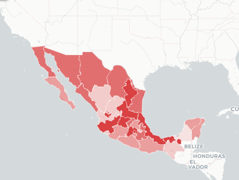

México está reportando 796 nuevos contagios de media cada día, 2% del pico — la media más alta, reportada en 23 de enero. Ha habido 5.745.652 contagios y 324.465 muertes relacionadas con el coronavirus en el país desde que comenzó la pandemia.
Cuando los contagios de COVID-19 comenzaron a ser reportados en todo el mundo, muchos países respondieron cerrando escuelas, espacios de trabajo y fronteras internacionales para contener la propagación del virus. Este gráfico representa las distintas medidas de cierre que fueron implementadas durante la pandemia.

La estadística muestra el número de muertes causadas por el SARS-CoV-2, conocido popularmente como el coronavirus de Wuhan, a nivel mundial a fecha de 20 de mayo de 2022. Hasta ese día se habían contabilizado aproximadamente seis millones de muertes debidas al virus, de las cuales 5.218 ocurrieron en China, lugar en el que se originó el virus. Sin embargo, el país asiático ya no es el territorio donde el nuevo coronavirus se ha cobrado más vidas. Estados Unidos encabeza la clasificación al superar el millón de decesos, seguido de Brasil con alrededor de 665.500. A 20 de mayo de 2022, había más de 526 millones de casos confirmados de COVID-19 en todo el mundo. Para más info. presione la imagen: